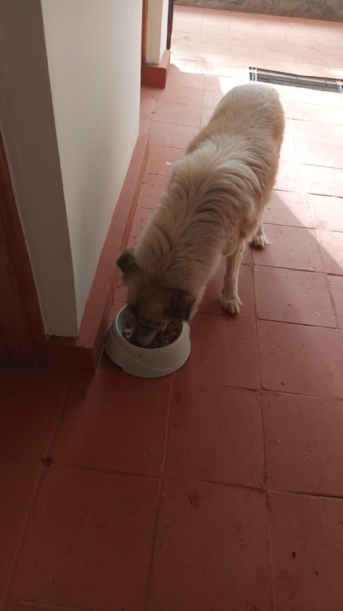

Mucheru World of Golf
Course construction and perimeter landscaping operations progressed under the supervision of Mr. Gichuhi and Ken:
- Widening the Apron on Green Number 10: Ground crews added red soil around the perimeter of Putting Green 10 to widen its surrounding apron. This expands the approach surface and creates a smooth transition between the leveled volcanic pumice green complex and surrounding red soil fairway contours.
- Digging Drainage Trenches from Green 17 to Dam 3: Manual excavation crews opened a continuous drainage trench connecting Putting Green 17 directly toward the Dam 3 catchment basin. The trench was excavated along a surveyed line through dry subsoil to provide reliable gravitational drainage for surface runoff.
- Applying Red Soil into Palm Tree Holes: Workers transported and applied rich red topsoil into prepared planting holes for palm trees situated along the boundary fence line, improving soil quality for future root establishment.
- Watering Ring Pipes Installation for Palm Trees: Irrigation technicians assembled and installed circular watering ring pipes fitted with micro-spray emitters around the palm tree planting holes. Connected to the perimeter lateral waterline, the rings were water-tested to ensure even spray coverage around each tree basin.
Key Accomplishments — Mucheru World of Golf
Putting Green 10 apron widened and leveled with red soil; drainage trench excavated along surveyed route from Green 17 toward Dam 3; red soil applied into perimeter palm tree holes; and circular watering ring pipes installed and successfully flow-tested.
🎥 Mucheru World of Golf — Site Operations Progress Video (September 18, 2026)
Field video recording documenting the widening of the apron on Green 10, drainage trench excavation from Green 17 toward Dam 3, red soil application in palm tree holes, and installation and testing of perimeter watering ring pipes.
Comprehensive 18-hole putting green status ledger detailing foundation bases, pumice leveling, contouring, and drainage connections. Highlighting incremental updates on September 18, 2026:
| Green | Current Technical & Agronomic State | Milestone Status |
|---|---|---|
| Green 1 | Red volcanic loam spread; volcanic pumice aggregate applied and leveled; subgrade drainage trenches excavated (Sep 15). | Trenched & Pumice Leveled |
| Green 2 | Red volcanic loam spread; volcanic pumice aggregate applied and leveled; subgrade drainage trenches excavated (Sep 15). | Trenched & Pumice Leveled |
| Green 3 | Red volcanic loam spread; volcanic pumice applied and leveled; subgrade drainage trenches excavated (Sep 15); fairway 4 approach leveled. | Trenched & Pumice Leveled |
| Green 4 | Architectural contouring executed: reshaped into organic bean-shaped complex (Sep 16); red volcanic loam spread; volcanic pumice applied and leveled; subgrade drainage trenched; fairway playing corridor cleared. | Reshaped (Bean) & Trenched |
| Green 5 | Ready. Fully established mature championship putting green turfgrass under active pop-up sprinkler irrigation conditioning. | Ready • Established Turf |
| Green 6 | Connecting drainage trench excavation toward Dam 1 commenced (Sep 17); trenching temporarily paused as channel depth became excessively deep, awaiting engineering advice from Joe Kamau; riversand added and leveled; red loam spread; subgrade drainage trenches cut. | Dam Outfall (Paused) |
| Green 7 | Subgrade drainage trenching actively excavated across layout grid (Sep 16); white lime grade contours established; sub-base preparation advancing. | Trenched & Subgrade Prep |
| Green 8 | Riversand applied during earlier phases but remains unleveled; red volcanic loam spread; subgrade drainage trenches excavated (Sep 15); surrounding slopes graded. | Riversand Unleveled |
| Green 9 | Architectural shaping completed; red volcanic loam spread; volcanic pumice applied and graded; subgrade drainage trenches excavated (Sep 15). | Trenched & Pumice Graded |
| Green 10 Today | Apron widened with red volcanic soil (Sep 18); hardcore foundation fractured; perforated PVC drainage lines net-wrapped; volcanic pumice applied and leveled; subgrade drainage trench cut. | Apron Widened & Leveled |
| Green 11 | Hardcore sub-base stabilized; separation membrane placed; red volcanic loam spread; volcanic pumice aggregate spread and leveled; subgrade drainage trenches excavated. | Trenched & Pumice Leveled |
| Green 12 | Hardcore stone foundation packed; separation membrane placed; red volcanic loam spread; volcanic pumice aggregate spread and leveled; subgrade drainage trenches excavated. | Trenched & Pumice Leveled |
| Green 13 | Hardcore rock fractured; red volcanic loam spread; volcanic pumice leveled; subgrade drainage trenches excavated (Sep 14). | Trenched & Pumice Leveled |
| Green 14 | Hardcore base and moisture-barrier membrane installed; red volcanic loam spread; volcanic pumice sub-base graded; sole remaining green on course awaiting drainage trench excavation. | Awaiting Final Trenching |
| Green 15 | Connecting outfall drainage trench actively excavated directly to Dam 1 along surveyed stringline (Sep 17); hardcore rock foundation fractured; separation membrane installed; red volcanic loam spread; volcanic pumice graded; subgrade drainage trenches cut. | Connected to Dam 1 |
| Green 16 | Hardcore foundation bed fractured and packed; separation membrane installed; red volcanic loam spread; volcanic pumice graded; subgrade drainage trenches excavated (Sep 14). | Trenched & Pumice Graded |
| Green 17 Today | Drainage trench excavation linking Green 17 directly toward Dam 3 actively dug along surveyed line (Sep 18); hardcore rock grid packed; red loam spread; separation membrane installed; volcanic pumice graded; subgrade trenches cut. | Trenched to Dam 3 |
| Green 18 | Architectural contouring executed: putting green reshaped to organic bean shape (Sep 16); hardcore rock fractured; red volcanic loam spread across foundation and collars; volcanic pumice aggregate leveled; subgrade drainage trenched. | Reshaped (Bean) & Trenched |
Comprehensive 18-hole championship teebox platform audit tracking precision earthwork leveling, structural embankments, and playing corridor alignments. Preserved day-to-day continuity as of September 18, 2026:
| Teebox | Current Technical & Earthwork State | Platform Status |
|---|---|---|
| Tee 1 | Platform leveled, graded, and compacted with mass murram fill during course bulk earthmoving. | Platform Leveled |
| Tee 2 | Foundation fill dumped and platform rough-leveled using 8 tipper truckloads of structural fill. | Fill Placed & Leveled |
| Tee 3 | Foundation fill dumped and platform rough-leveled using 8 tipper truckloads of structural fill. | Fill Placed & Leveled |
| Tee 4 | Championship launch platform precision-graded and leveled to design elevation. | Precision Leveled |
| Tee 5 | Playing platform leveled, compacted, and adjusted to align with fairway playing corridor. | Platform Compacted |
| Tee 6 | Precision leveling and compaction completed along the boundary tree corridor. | Platform Leveled |
| Tee 7 | Finalized. Elevated plateau leveled, compacted, and reinforced with a perimeter protective earth berm along fence line. | Finalized • Berm Complete |
| Tee 8 | Graded, leveled, and contour-adjusted to match fairway transitions and surrounds. | Contour Adjusted |
| Tee 9 | Playing platform leveled and surrounding perimeter ground graded (Sep 1). | Platform Leveled |
| Tee 10 | Graded and compacted platform serving the start of the back-nine playing corridor. | Platform Compacted |
| Tee 11 | Rough shaping, elevation grading, and Backhoe subsoil leveling completed (Sep 7). | Shaped & Graded |
| Tee 12 | Dual platforms established: primary championship tee resized; new forward Ladies' Tee platform constructed (Sep 5). | Dual Platforms Complete |
| Tee 13 | Playing platform completely reshaped, contour-leveled, and perimeter shoulders graded to match fairway transition (Sep 16). | Reshaped & Leveled |
| Tee 14 | Playing platform reshaped, elevation precision-leveled, and protective boundary embankment reinforced (Sep 16). | Reshaped & Leveled |
| Tee 15 | Leveled platform and primary irrigation tie-in zone; main HDPE waterline laid along boundary trench from gate to Tee 15 (Sep 15). | Irrigation Mainline Node |
| Tee 16 | Platform leveled, filled, and surface contours profiled. | Profile Graded |
| Tee 17 | Playing platform widened and expanded to increase launch surface area; filled, compacted, and edge transitions graded (Sep 16). | Widened & Leveled |
| Tee 18 | Championship tee platform leveled; perimeter approach cleared and graded (Sep 1). | Platform Leveled |
Operations Synthesis
Course engineering advanced with the widening and leveling of Putting Green 10's apron using red volcanic soil, creating smoother approach transitions around the pumice base. Subgrade outfall drainage trenching progressed with a new channel excavated from Green 17 directly toward Dam 3 along the surveyed line. Perimeter landscaping advanced through the application of red soil into palm tree planting holes, accompanied by the installation and testing of circular watering ring pipes fitted with spray emitters along the boundary fence.
Sequential field photography capturing Green 10 apron widening, drainage trench excavation toward Dam 3, red soil application for palm tree holes, and watering ring pipe installation:

Putting Green 10 — Apron Widening & Pumice Foundation
Overview of Green 10 showing the leveled pumice foundation bed, edge separation membrane, foreground drainage trench, and workers spreading red soil along the outer apron.

Drainage Trench Excavation — Green 17 to Dam 3
Excavation team digging a continuous outfall drainage trench along the surveyed stringline, cutting through subsoil to channel runoff from Green 17 toward Dam 3.

Red Soil Application for Palm Tree Holes
Ground workers using wheelbarrows to transport and spread rich red volcanic topsoil into prepared palm tree planting holes along the fence line.

Perimeter Irrigation Manifold Assembly
Plumbing technician assembling pipe fittings, elbows, and blue control valves along the boundary trench to regulate water distribution to palm tree irrigation lines.

Installation of Palm Tree Watering Ring Pipes
Team positioning and connecting a circular watering ring pipe in a palm tree planting hole, linking it to the perimeter supply line for root irrigation.

Water Flow Test on Circular Watering Ring
Detailed view of the circular irrigation ring pipe under pressure, showing micro-emitters spraying water evenly inside the tree planting basin.

Perimeter Irrigation & Tree Supply Pipe Line
Black HDPE main waterline and lateral feeder pipes laid along the excavated trench parallel to the perimeter wire fence line.
Chaka Farms
Daily dairy milking operations were conducted across morning and evening sessions under the oversight of Kamandau:
- Gross Milk Yield: Total daily dairy cow milk production reached 4.0 Litres (strictly recorded in Litres: 1.5L morning yield and 2.5L evening yield).
- Milking Process Note: One cow spilled some milk during the milking process, which slightly reduced the morning collection volume. Evening milking was completed smoothly.
-
Rations & Deductions Allocation: A total of 2.0 Litres was deducted from the gross production for authorized rations and staff disbursements:
- • Goat Kids Ration: 1.0 Litre total (0.5L morning + 0.5L evening ration for young stock nourishment).
- • Staff Allocation — Gladys: 0.5 Litres.
- • Staff Allocation — Maasai: 0.5 Litres.
- Net Remaining Farm Balance: Subtracting the 2.0L in total deductions from the 4.0L gross production leaves a net farm balance of 2.0 Litres in storage.
Daily Dairy Summary
Gross milk yield of 4.0L logged in Litres; young goat stock nourished with morning and evening milk rations; staff allocations disbursed; and 2.0L net reserve stored safely.
Quantitative daily milking yield audit strictly recorded in Litres, documenting gross cow production, authorized deductions for livestock nourishment and staff allocations, and net remaining cold storage balance for Friday, 18th September 2026:
| Category / Line Item | Morning (Litres) | Evening (Litres) | Total (Litres) |
|---|---|---|---|
| Gross Dairy Cow Milk Production | 1.5 L | 2.5 L | 4.0 L |
| Goat Kids Ration | -0.5 L | -0.5 L | -1.0 L |
| Staff Allocation (Gladys) | — | -0.5 L | -0.5 L |
| Staff Allocation (Maasai) | — | -0.5 L | -0.5 L |
| Net Farm Milk Balance | 1.0 L | 1.0 L | 2.0 L |
Milking Process Note — Morning Container Spill
During the morning milking process, one dairy cow knocked a milk container and spilled some milk, resulting in a lower gross morning yield of 1.5L. Evening milking proceeded smoothly without incident, yielding 2.5L and bringing total daily gross yield to 4.0L.
Rations & Deductions Reconciliation
All disbursements (1.0L total for goat kids, 0.5L for Gladys, and 0.5L for Maasai) are deductions drawn directly out of the 4.0L gross milking yield, leaving an audited net farm balance of 2.0 Litres in storage.
Field material haulage, perimeter fencing adjustments, and equipment servicing were carried out under the supervision of Kinoti:
- Murram Relocation: Murram was moved from the golf site farm perimeter to designated placement zones, clearing boundary access routes.
- Fence Posts Transport: Timber fence posts were moved from Chaka Farms B perimeter across to Chaka Farms A perimeter for fencing works.
- Sand Haulage to Greenhouse: Building sand was moved from the golf site and delivered to the farm greenhouse for agricultural use.
- Tractor Maintenance Works: Scheduled maintenance and mechanical servicing were conducted on the farm tractor to ensure operational readiness for ongoing farm haulage tasks.
Materials & Equipment Summary
Murram cleared along the golf perimeter boundary; fence posts transferred to Chaka Farms A perimeter; sand delivered to the greenhouse; and tractor servicing successfully completed.
Canine unit behavioral training and general estate maintenance proceeded smoothly across the farm:
- Kennel Manners & Command Training: Willy conducted kennel manners sessions with working dogs, focusing on threshold patience and proper execution of the "paw" command.
- Afternoon Off-Leash Walking: Dogs completed their afternoon off-leash walking exercise across farm fields, maintaining good recall and socialized farm interaction.
- Patience & Obedience Drills: Structured drills were performed focusing on impulse control, stay commands, and handler responsiveness.
- General Compound Cleanliness: Margaret and Monica carried out sweeping, trash collection, and routine cleanliness routines across farm courtyards, paths, and building surrounds.
Canine & Grounds Summary
Canine manners and paw command practiced; afternoon off-leash exercise completed; obedience drills conducted; and farm compound cleanliness maintained.
🎥 Chaka Farms Canine Unit — Patience & Obedience Training Session
Field video recording capturing kennel manners, paw command practice, and off-leash patience and obedience training drills overseen by Willy.
Kabete Residence
Site ground preparation and domestic pet care were carried out at Kabete Residence, with operations overseen and field updates shared by Njoki:
- Ground Level Preparations: Workers carried out ground leveling and soil preparation around the building foundations and retaining embankment, establishing an even subgrade.
- Clearing the Ground: Laborers shoveled and cleared loose red soil, tree roots, and stone debris from the work area, filling buckets and removing rubble to clear the excavation floor.
- Manual Rock & Foundation Stone Removal: Large stones and foundation masonry fragments were manually lifted and relocated out of the cleared excavation pit.
-
Domestic Pet Care (Ajabu & Cats): Routine feeding and domestic care were provided for all resident pets:
- • Ajabu the Golden Retriever: Fed his regular meal in his bowl on the residence veranda.
- • Resident Cats (Mocha, Aiko & Reo): Fed their meals together in stainless steel bowls on the tiled corridor floor.
Key Accomplishments — Kabete Residence
Ground level preparation and soil leveling advanced; excavation floor cleared of rocks and soil debris; and regular domestic feeding provided for resident dog Ajabu and cats Mocha, Aiko, and Reo.
Sequential field photography capturing ground leveling, rock and soil clearing, and domestic pet feeding at Kabete Residence:

Ground Level Preparations — Foundation Footprint
Workers in safety vests leveling the red soil floor and clearing earth along the building foundation wall.

Clearing the Ground — Embankment Base
Laborers clearing loose earth and rocks near the exposed embankment wall to prepare an even work area.

Subsoil Clearance & Bucket Removal
Workers gathering cleared red subsoil into buckets next to the access ladder for removal from the excavation area.

Manual Rock & Stone Removal
Laborer manually lifting and clearing a heavy rock fragment from the excavated red soil slope.

Resident Dog Care — Ajabu
Ajabu the Golden Retriever eating his meal from a white bowl on the tiled residence veranda.

Resident Cats Care — Mocha, Aiko & Reo
Resident cats Mocha, Aiko, and Reo feeding side-by-side from bowls on the residence tiled corridor floor.
Amani Cottage
Grounds care and interior domestic housekeeping were carried out at Amani Cottage under the oversight of Edwin and Jane:
- Lawn & Garden Irrigation: Edwin operated garden hose and sprinkler irrigation across the front lawn and flower beds to maintain turf moisture during dry weather.
- Compound Sweeping: Grounds sweeping was carried out across the lawns and perimeter trees to clear fallen leaves and keep outdoor living spaces tidy.
- Carpet Washing: Large floor carpets and area rugs were taken out onto the terrace deck, washed thoroughly with soap and water using a scrub brush, and hung along the railing to air dry.
- Interior Dusting & Housekeeping: Jane performed detailed dusting across furniture, shelves, and interior rooms to keep the cottage clean and well maintained.
Key Accomplishments — Amani Cottage
Front lawn and garden areas fully irrigated; compound lawns swept clean of fallen leaves; terrace carpets scrubbed and washed; and interior dusting completed.
Sequential field photography capturing compound lawn sweeping, carpet washing, and veranda deck maintenance at Amani Cottage:

Compound Sweeping — Lawn Care
Groundsman raking and sweeping fallen leaves and twigs across the grass lawn under the trees at Amani Cottage.

Carpet Washing on Terrace Deck
Housekeeper scrubbing a large cream patterned carpet on the outdoor stone terrace using water hose, soap, and scrub brush.

Carpet Washing & Drying on Balcony Deck
Cleaned area rug hung over the wooden deck railing to air dry while an additional carpet is washed on the paved patio.